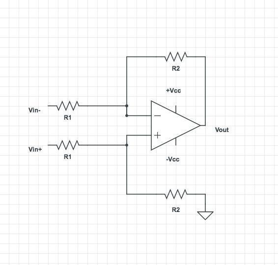
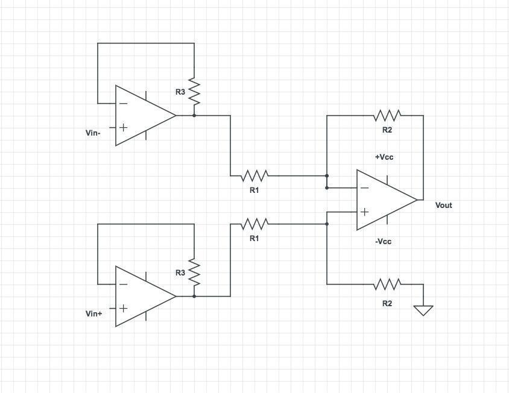
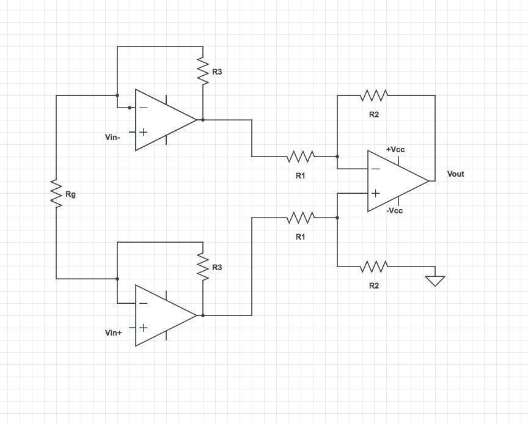
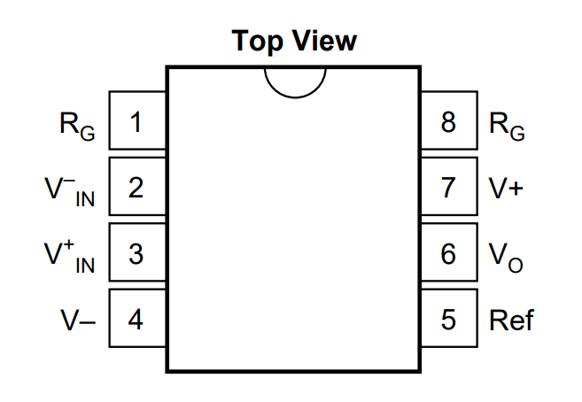

Part 5 - Differential amplification
Differential amplifier
As seen in the previous section, when using an electrode to measure extracellular signals, the voltages are significantly attenuated. We can use an active circuit to amplify these signals. Moreover, when recording extracellular signals, we would like to perform a differential measurement, that is to measure the voltage difference between an electrode and a reference (different from the ground in the general case). This type of measurement differs from the single-ended measurements we have seen so far, in which one of the voltages is the ground.
A differential amplifier amplifies the voltage difference between two points and gets rid of the signal common to both (which could be noise, artifact, or any biological signal common to both electrodes that we are not interested in). A differential amplifier can be built out of an op-amp with a feedback resistor between one input and one output port, as shown below:

An ideal differential amplifier will amplify the difference between its 2 input ports:
\(A_{d}\) is referred to as the differential gain.
Question (bonus): Can you derive the gain term? Hint: \(R_{1}\) and \(R_{2}\) effectively acts as a voltage divider.
Common mode noise rejection:
Question: If differential amplifiers get rid of the common signal, they should get rid of all noise. Then why do we need to use Faraday cages to remove line noise?
When dealing with small signals (differential term) and very large noise (common mode term), such as line noise, even a small \(A_{cm}\) can lead to a large common mode term in the output that not only overwhelms the signal but more importantly, can saturate the amplifier. Saturation leads to permanent information loss. Therefore it is crucial to eliminate noise as much as possible.
Instrumentation amplifier
Let's put everything we've learned so far together. If we add two voltage followers at the inputs of the differential amplifier, we get the following circuit (you don't need to make it):

This is called an instrumentation amplifier and is a basic building block of many e-phys measurement systems. It has a high input impedance and amplifies the signal.
In practice, an additional resistor is added between the inverting inputs of the two voltage followers. The final gain of the circuit will be \(\ (\frac{R_{2}}{R_{1}}) \times (1 + \frac{{2R}_{3}}{R_{g}}\ )\), which can be easily modified by changing \(R_{g}\).

Question (bonus): Can you think of an advantage for adding \(R_{g}\)?
Question (bonus): If you wanted to design your own amplifier for an extracellular recording system, what parameters would you consider when choosing the amplification gain?
Exercise 5-1:
In this section, we will use a commercial instrumentation amplifier that encapsulates this entire circuit in a single chip designed to amplify small differential signals and remove their common modes (noise).
Next, get an INA121 instrumentation amplifier and mount it on your breadboard. It may be a good idea to find the datasheet for this device, which will tell you all about its operation.
Now, set the gain using \(R_{g\ } = 47\ kOhm\).
- Measure the gain.

Change the value of \(R_{g}\)to get a gain of 10 or higher (check the datasheet).
- What happens to your signal?
Switch \(R_{g\ }\) back to \(47\ kOhm\), and do not disassemble your circuit. We'll come back to it.